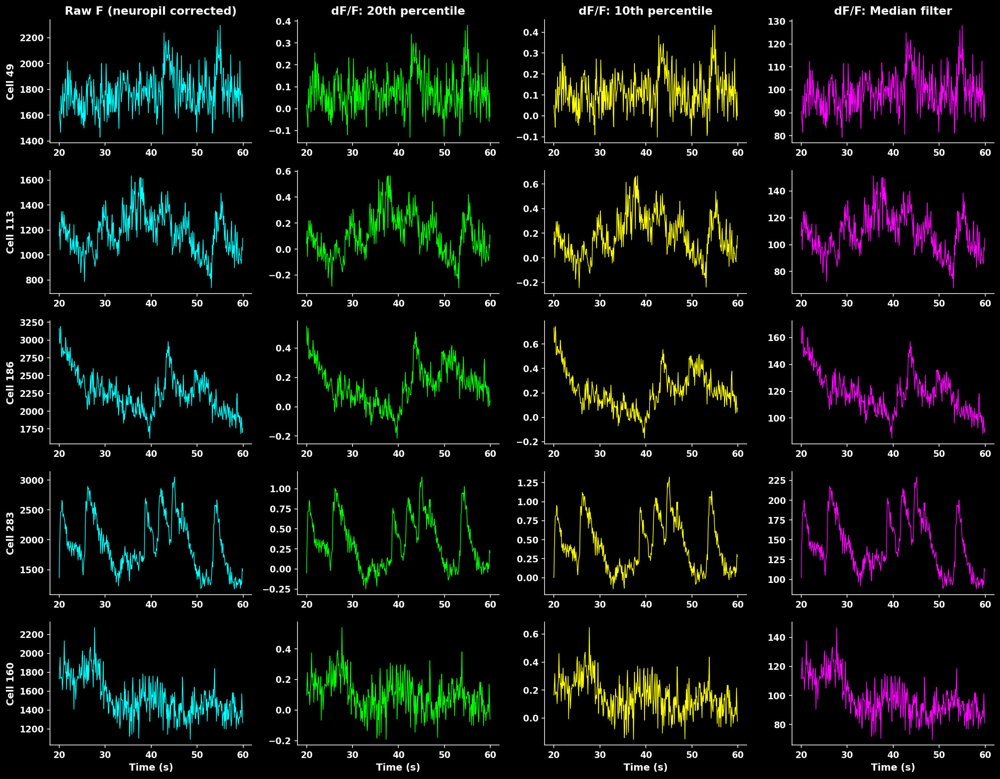
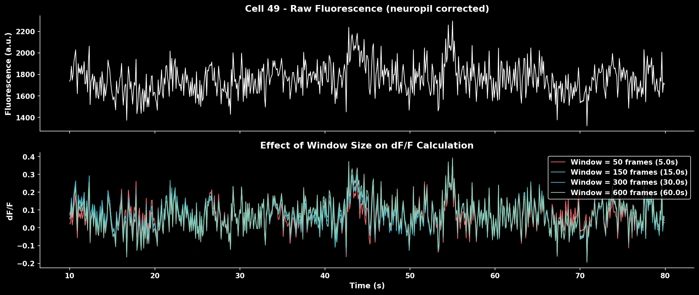
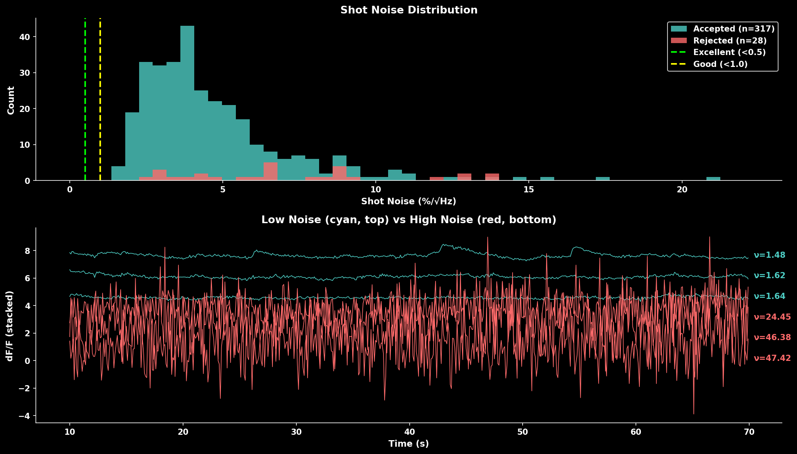
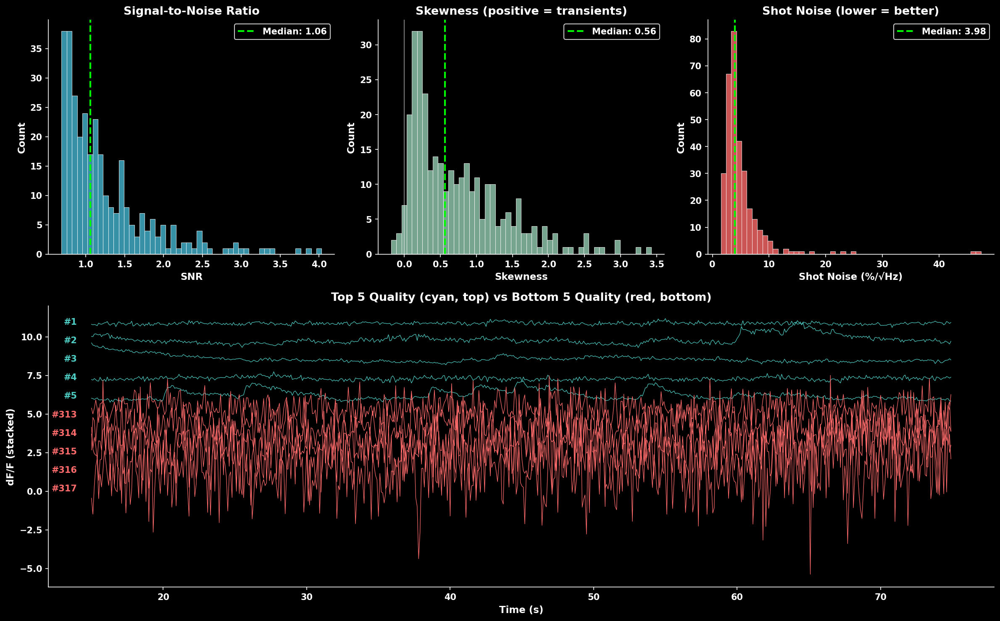
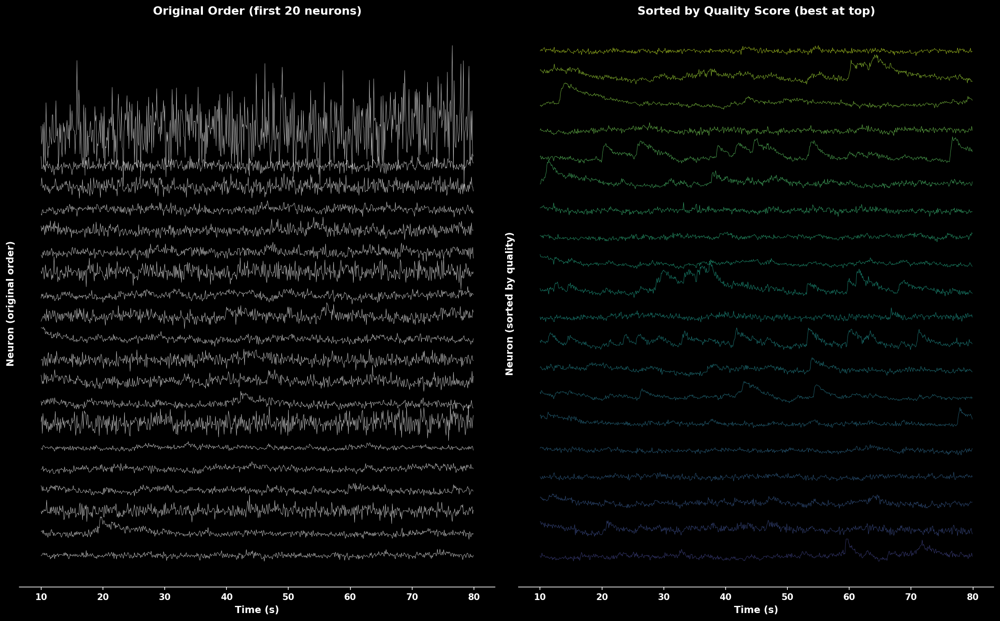
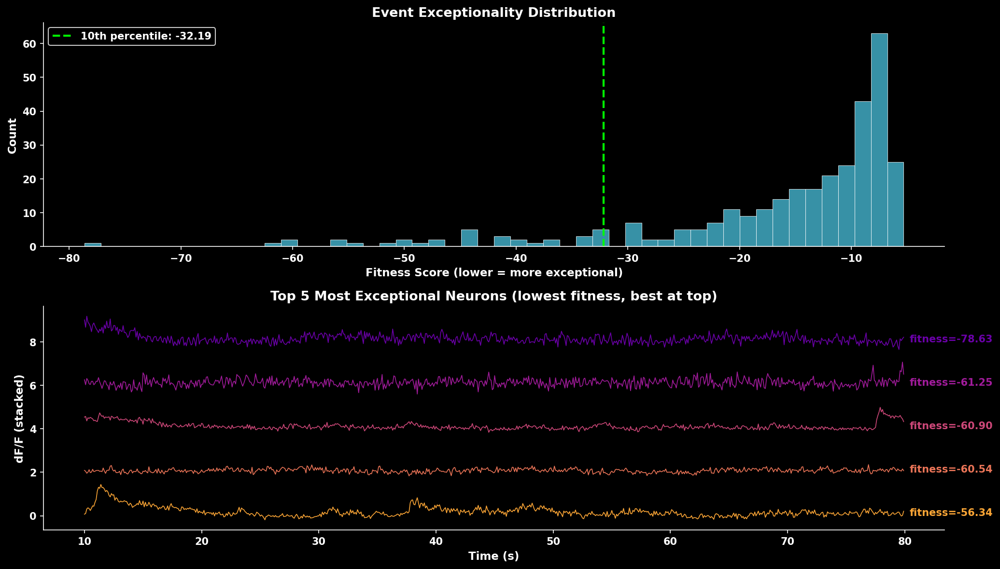

Postprocessing Functions#
This guide covers the postprocessing functions available in LBM-Suite2p-Python for analyzing and refining calcium imaging traces after Suite2p extraction.
See also
User Guide - Complete pipeline examples and parameter tuning
Processing Flow - Suite2p internal processing steps
Pipeline Comparison - How CaImAn, Suite2p, EXTRACT compare
Data Loaders#
Load Planar Results#
Load all Suite2p outputs from a plane directory:
from lbm_suite2p_python import load_planar_results
results = load_planar_results("path/to/plane01")
# or
results = load_planar_results("path/to/plane01/ops.npy")
# Access data
F = results['F'] # (n_rois, n_frames) fluorescence
Fneu = results['Fneu'] # (n_rois, n_frames) neuropil
spks = results['spks'] # (n_rois, n_frames) deconvolved spikes
stat = results['stat'] # ROI statistics array
iscell = results['iscell'] # (n_rois, 2) classification
# Filter for accepted cells
iscell_mask = iscell[:, 0].astype(bool)
F_cells = F[iscell_mask]
Load Ops#
Simple utility to load ops.npy:
from lbm_suite2p_python import load_ops
ops = load_ops("path/to/ops.npy")
# or
ops = load_ops("path/to/plane01") # auto-finds ops.npy
Load Traces (Accepted Only)#
Load only accepted cell traces:
from lbm_suite2p_python.postprocessing import load_traces
F, Fneu, spks = load_traces(ops)
# Returns only traces where iscell[:, 0] == True
ΔF/F Calculation#
Rolling Percentile Baseline#
The recommended method for computing ΔF/F₀ uses a rolling percentile baseline that adapts to slow drifts in fluorescence:
from lbm_suite2p_python import dff_rolling_percentile
# Basic usage
dff = dff_rolling_percentile(F, window_size=300, percentile=20)
# With auto-calculated window sizes based on indicator kinetics
dff = dff_rolling_percentile(
F,
tau=1.0, # GCaMP decay constant (seconds)
fs=30.0, # Frame rate (Hz)
percentile=20, # Baseline percentile
)
Parameters:
window_size: Rolling window in frames (~10 × tau × fs recommended)percentile: Percentile for baseline (20 is typical for calcium imaging)tau,fs: Auto-calculate window sizes from indicator kineticssmooth_window: Optional temporal smoothing (~0.5 × tau × fs)
{kind=link}

Comparison of different ΔF/F calculation methods. Rolling percentile (20th) provides robust baseline estimation that handles slow drifts while preserving transient peaks.#
Z-Score#
As an alternative to ΔF/F, traces can be z-scored per ROI ((F - mean) / std over time):
from lbm_suite2p_python import zscore_trace
z = zscore_trace(F, smooth_window=15)
Normalized traces output#
The pipeline writes the normalized trace to norm_traces.npy. Choose the method with norm_method:
import lbm_suite2p_python as lsp
lsp.pipeline(input_data, norm_method="zscore") # per-ROI z-score (default)
lsp.pipeline(input_data, norm_method="dff") # rolling-percentile ΔF/F
The dff_window_size / dff_percentile / dff_smooth_window parameters apply when norm_method="dff". Quality metrics (SNR, skew, shot-noise) always use a static-baseline ΔF/F (baseline_percentile_dff()) regardless of norm_method.
Window Size Effect#
The window size critically affects baseline estimation:
{kind=link}

Effect of window size on ΔF/F calculation. Smaller windows track faster baseline changes but may contaminate baseline with transients. Larger windows provide stable baselines but miss slow drifts.#
Rule of thumb: Use ~10× the indicator decay time constant (tau) × frame rate.
Indicator |
Tau (s) |
Frame Rate |
Recommended Window |
|---|---|---|---|
GCaMP6f |
0.4 |
30 Hz |
~120 frames |
GCaMP6s |
1.0 |
30 Hz |
~300 frames |
GCaMP7s |
1.0 |
17 Hz |
~170 frames |
GCaMP8f |
0.25 |
30 Hz |
~75 frames |
Median Filter Baseline#
A simpler alternative for stable recordings:
from lbm_suite2p_python import dff_median_filter
dff = dff_median_filter(F)
Uses 1% of the median fluorescence as F₀. Fast but less adaptive to baseline drifts.
Noise Estimation#
Shot Noise#
Quantify recording quality using standardized shot noise levels:
from lbm_suite2p_python import dff_shot_noise
noise = dff_shot_noise(dff, fr=30.0) # Returns noise in %/√Hz
The shot noise metric from Rupprecht et al. (2021) enables comparison across datasets:
{kind=link}

Shot noise distribution comparing accepted vs rejected cells. Lower noise indicates cleaner recordings. The trace panel shows example neurons with low noise (cyan, top) vs high noise (red, bottom).#
Quality Benchmarks:
Noise Level |
Quality |
Interpretation |
|---|---|---|
< 0.5 %/√Hz |
Excellent |
Very clean signal |
0.5-1.0 %/√Hz |
Good |
Typical for healthy recordings |
1.0-2.0 %/√Hz |
Fair |
May need filtering |
> 2.0 %/√Hz |
Poor |
Consider excluding |
Quality Scoring#
Compute Trace Quality Score#
Combine multiple metrics to rank neurons by signal quality:
from lbm_suite2p_python import compute_trace_quality_score
result = compute_trace_quality_score(
F, Fneu, stat,
fs=30.0,
weights={'snr': 1.0, 'skewness': 0.8, 'shot_noise': 0.5}
)
# Access results
sorted_F = F[result['sort_idx']] # Traces sorted best to worst
snr = result['snr'] # SNR values
scores = result['score'] # Combined scores
Metrics combined:
SNR: Signal standard deviation / noise estimate (higher = better)
Skewness: Positive skew indicates calcium transients (higher = better)
Shot noise: Frame-to-frame variability (lower = better, inverted in score)
Neuropil correction and rectification:
Neuropil subtraction (F - 0.7 * Fneu) can produce negative fluorescence values, especially in ROIs where the neuropil signal is strong relative to the soma. Negative values drag down the mean fluorescence while preserving the same standard deviation, which artificially suppresses the SNR toward or below 1.
To correct this, compute_trace_quality_score and compute_roi_stats rectify the corrected trace by clipping negative values to zero before computing dF/F:
F_corr = F - 0.7 * Fneu
F_corr = np.maximum(F_corr, 0) # rectify negatives
This ensures the baseline estimate (20th percentile) remains meaningful and SNR values are > 1 for active neurons. If you compute dF/F manually (e.g. via dff_rolling_percentile), apply the same rectification to your neuropil-corrected traces before passing them in.
{kind=link}

Quality score component distributions (SNR, skewness, shot noise) and example traces. The bottom panel shows top 5 quality neurons (cyan, top) vs bottom 5 quality neurons (red, bottom).#
Sort Traces by Quality#
Convenience function to sort traces:
from lbm_suite2p_python import sort_traces_by_quality
F_sorted, sort_idx, quality = sort_traces_by_quality(F, Fneu, stat, fs=30.0)
# Use sort_idx to sort other arrays
stat_sorted = stat[sort_idx]
iscell_sorted = iscell[sort_idx]
{kind=link}

Comparison of traces in original order (left) vs sorted by quality score (right). Quality-sorted display shows best neurons at top with color gradient from high quality (yellow) to lower quality (purple).#
ROI Filtering#
Pipeline-Integrated Filtering#
The lsp.pipeline() function automatically applies cell filters after suite2p detection. This is the recommended approach for most workflows.
Default Filter Behavior#
By default, if pixel resolution is available in the metadata, lsp.pipeline() applies a diameter filter of 4-35 µm:
# default behavior - auto-applies 4-35 µm filter if pixel_size available
results = lsp.pipeline("D:/data/raw")
Custom Filters via cell_filters#
Override the default with the cell_filters parameter:
# custom filters
results = lsp.pipeline(
"D:/data/raw",
cell_filters=[
{"name": "max_diameter", "min_diameter_um": 5, "max_diameter_um": 25},
{"name": "eccentricity", "max_ratio": 4.0},
],
)
Available Filters#
Filter Name |
Parameters |
Description |
|---|---|---|
|
|
Filter by ROI diameter |
|
|
Filter by pixel count |
|
|
Filter by bounding box aspect ratio |
|
|
Filter relative to |
Disable All Filtering#
To skip all cell filters, pass an empty list:
results = lsp.pipeline("D:/data/raw", cell_filters=[])
accept_all_cells Parameter#
Suite2p’s internal classifier may reject ROIs based on morphological properties. Use accept_all_cells=True to accept all detected ROIs regardless of suite2p’s classification:
results = lsp.pipeline(
"D:/data/raw",
accept_all_cells=True, # mark all suite2p-rejected ROIs as accepted
cell_filters=[], # optionally skip additional filtering too
)
Important notes:
This does NOT disable suite2p’s internal detection filters (overlap removal, neuropil requirements, etc.) - those happen during detection
It only flips the
iscellclassification after detection completesThe original suite2p classification is saved as
iscell_suite2p.npyCell probabilities (column 1 of iscell) are preserved
Use cases:
Comparing your filtering to suite2p’s classification
Manual curation workflows where you want all candidates
Debugging why certain ROIs were rejected
Filter Summary Figures#
When filters reject cells, the pipeline generates diagnostic figures:
Planar outputs (in each plane directory):
13_filtered_cells.png- side-by-side before/after comparison14_filter_<name>.png- per-filter exclusion visualization15_filter_summary.png- combined summary showing all filtering stages
Volumetric output (in suite2p root):
volume_filter_summary.png- stacked bar chart per plane + pie chart summary
These figures distinguish between:
suite2p rejected - rejected by suite2p’s classifier (red)
filter rejected - rejected by your
cell_filters(orange)accepted - final accepted cells (green)
Programmatic Filtering with apply_filters#
For more control, use apply_filters() directly:
from lbm_suite2p_python.postprocessing import apply_filters
iscell_filtered, removed_mask, filter_results = apply_filters(
plane_dir="path/to/plane01",
filters=[
{"name": "max_diameter", "min_diameter_um": 5, "max_diameter_um": 25},
{"name": "eccentricity", "max_ratio": 4.0},
],
save=True, # save updated iscell.npy
)
# filter_results contains per-filter info
for result in filter_results:
print(f"{result['name']}: removed {result['removed_mask'].sum()} ROIs")
Manual Filter Functions#
For fine-grained control, use the individual filter functions:
Filter by Diameter#
Remove ROIs with abnormal sizes:
from lbm_suite2p_python.postprocessing import filter_by_diameter
iscell = filter_by_diameter(
iscell, stat, ops,
min_mult=0.3, # Reject if < 30% of expected diameter
max_mult=3.0 # Reject if > 300% of expected diameter
)
Filter by Area#
Filter based on pixel count:
from lbm_suite2p_python.postprocessing import filter_by_area
iscell = filter_by_area(
iscell, stat,
min_mult=0.25, # Reject if < 25% of median area
max_mult=4.0 # Reject if > 400% of median area
)
Filter by Eccentricity#
Remove elongated ROIs that are likely not cell bodies:
from lbm_suite2p_python.postprocessing import filter_by_eccentricity
iscell = filter_by_eccentricity(
iscell, stat,
max_ratio=5.0 # Reject if bounding box ratio > 5:1
)
Combined Filtering Example#
from lbm_suite2p_python.postprocessing import (
filter_by_diameter,
filter_by_area,
filter_by_eccentricity
)
# Load results
results = lsp.load_planar_results(ops_path)
iscell = results['iscell'][:, 0].astype(bool)
stat = results['stat']
ops = lsp.load_ops(ops_path)
# Apply filters sequentially
iscell = filter_by_diameter(iscell, stat, ops, min_mult=0.3, max_mult=3.0)
iscell = filter_by_area(iscell, stat, min_mult=0.25, max_mult=4.0)
iscell = filter_by_eccentricity(iscell, stat, max_ratio=5.0)
print(f"Accepted after filtering: {iscell.sum()}")
Event Detection#
Event Exceptionality#
Identify neurons with exceptional (rare) events using the method from Suite2p:
from lbm_suite2p_python.postprocessing import compute_event_exceptionality
fitness, erfc, sd_r, md = compute_event_exceptionality(
traces, # dF/F or spike traces
N=5, # Number of consecutive samples
robust_std=False
)
# Lower fitness = more exceptional events
best_neurons = np.argsort(fitness)[:20]
Returns:
fitness: Event exceptionality score (lower = more exceptional)erfc: Log-probability tracessd_r: Noise standard deviation estimatesmd: Mode estimates (baseline)
{kind=link}

Event exceptionality analysis. The fitness score distribution shows most neurons have moderate exceptionality. Lower fitness scores indicate neurons with rarer, more exceptional events. The trace panel shows the 5 most exceptional neurons (lowest fitness scores) with best-quality neurons displayed at top.#
Export Utilities#
Ops to JSON#
Export ops dictionary to JSON for reproducibility:
from lbm_suite2p_python.postprocessing import ops_to_json
# From ops.npy file
ops_to_json("path/to/ops.npy", outpath="ops.json")
# From dictionary
ops_to_json(ops_dict, outpath="ops.json")
Complete Workflow Example#
import lbm_suite2p_python as lsp
import numpy as np
# Load results
results = lsp.load_planar_results("path/to/plane01")
ops = lsp.load_ops("path/to/plane01")
F = results['F']
Fneu = results['Fneu']
stat = results['stat']
iscell = results['iscell']
fs = ops.get('fs', 30.0)
# 1. Apply ROI filters
from lbm_suite2p_python.postprocessing import (
filter_by_diameter, filter_by_area, filter_by_eccentricity
)
iscell_mask = iscell[:, 0].astype(bool)
iscell_mask = filter_by_diameter(iscell_mask, stat, ops)
iscell_mask = filter_by_area(iscell_mask, stat)
iscell_mask = filter_by_eccentricity(iscell_mask, stat)
# 2. Filter arrays
F_filt = F[iscell_mask]
Fneu_filt = Fneu[iscell_mask]
stat_filt = stat[iscell_mask]
# 3. Calculate dF/F
dff = lsp.dff_rolling_percentile(
F_filt - 0.7 * Fneu_filt,
tau=1.0, fs=fs
)
# 4. Estimate noise quality
noise = lsp.dff_shot_noise(dff, fs)
print(f"Median noise: {np.median(noise):.3f} %/√Hz")
# 5. Sort by quality
F_sorted, sort_idx, quality = lsp.sort_traces_by_quality(
F_filt, Fneu_filt, stat_filt, fs
)
# 6. Visualize top neurons
lsp.plot_traces(
F_sorted[:20],
fps=fs,
title="Top 20 Neurons by Quality"
)